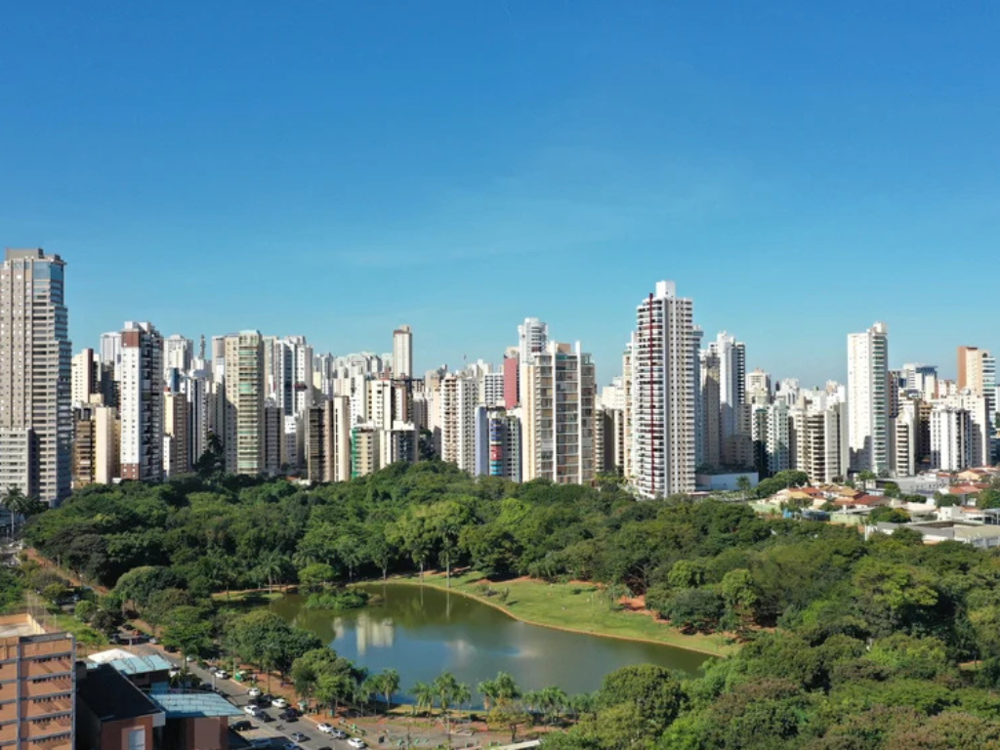

Goiás é o coração pulsante do Centro-Oeste, um estado onde a força do agronegócio se encontra com uma natureza preservada e uma história colonial riquíssima. No interior, cidades como Pirenópolis e a Cidade de Goiás (antiga capital e Patrimônio Mundial) preservam casarões antigos e tradições seculares que remetem ao ciclo do ouro. A capital, Goiânia, destaca-se como uma das cidades mais arborizadas do país e por seu impressionante acervo de arquitetura Art Déco.
